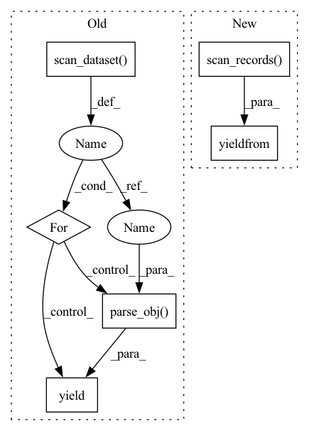

Pattern ID :8261

Before Change
the provided query filters. Optional
for db_record in self.__dao__.scan_dataset(
dataset, search=RecordSearch(query=query.as_elasticsearch())
):
yield TextClassificationRecord.parse_obj(db_record)
def _check_multi_label_integrity(
self, dataset: Dataset, records: List[TextClassificationRecord]
):
After Change
the provided query filters. Optional
yield from self.__search__.scan_records(
dataset, query=query, record_type=TextClassificationRecord
)
def _check_multi_label_integrity(
self, dataset: Dataset, records: List[CreationTextClassificationRecord]
):
In pattern: SUPERPATTERN
Frequency: 3
Non-data size: 6
Instances
Fragment ID: 29066574
Project Name: recognai/rubrix
Commit Name: 179bac7cd0569bdece366dc51d6121ee991c029d
Time: 2022-03-04
Author: francisco@recogn.ai
File Name: src/rubrix/server/tasks/text_classification/service/service.py
M Class Name: TextClassificationService
N Class Name: TextClassificationService
M Method Name: read_dataset(3)
N Method Name: read_dataset(3)
M Parent Class:
N Parent Class:
M File Name: src/rubrix/server/tasks/text_classification/service/service.py
N File Name: src/rubrix/server/tasks/text_classification/service/service.py
M Start Line: 222
M End Line: 227
N Start Line: 217
N End Line: 219
'>
Before Change
the provided query filters. Optional
for db_record in self.__dao__.scan_dataset( // TODO: use search service instead
dataset, search=RecordSearch(query=query.as_elasticsearch())
):
yield Text2TextRecord.parse_obj(db_record)
_instance = None
After Change
the provided query filters. Optional
yield from self.__search__.scan_records(
dataset, query=query, record_type=Text2TextRecord
)
_instance = None
'>
Fragment ID: 29066573
Project Name: recognai/rubrix
Commit Name: 179bac7cd0569bdece366dc51d6121ee991c029d
Time: 2022-03-04
Author: francisco@recogn.ai
File Name: src/rubrix/server/tasks/text2text/service/service.py
M Class Name: Text2TextService
N Class Name: Text2TextService
M Method Name: read_dataset(3)
N Method Name: read_dataset(3)
M Parent Class:
N Parent Class:
M File Name: src/rubrix/server/tasks/text2text/service/service.py
N File Name: src/rubrix/server/tasks/text2text/service/service.py
M Start Line: 164
M End Line: 169
N Start Line: 164
N End Line: 166
'>
Before Change
the provided query filters. Optional
for db_record in self.__dao__.scan_dataset(
dataset, search=RecordSearch(query=query.as_elasticsearch())
):
yield TokenClassificationRecord.parse_obj(db_record)
_instance = None
After Change
the provided query filters. Optional
yield from self.__search__.scan_records(
dataset, query=query, record_type=TokenClassificationRecord
)
_instance = None
'>
Fragment ID: 29066572
Project Name: recognai/rubrix
Commit Name: 179bac7cd0569bdece366dc51d6121ee991c029d
Time: 2022-03-04
Author: francisco@recogn.ai
File Name: src/rubrix/server/tasks/token_classification/service/service.py
M Class Name: TokenClassificationService
N Class Name: TokenClassificationService
M Method Name: read_dataset(3)
N Method Name: read_dataset(3)
M Parent Class:
N Parent Class:
M File Name: src/rubrix/server/tasks/token_classification/service/service.py
N File Name: src/rubrix/server/tasks/token_classification/service/service.py
M Start Line: 185
M End Line: 190
N Start Line: 185
N End Line: 187